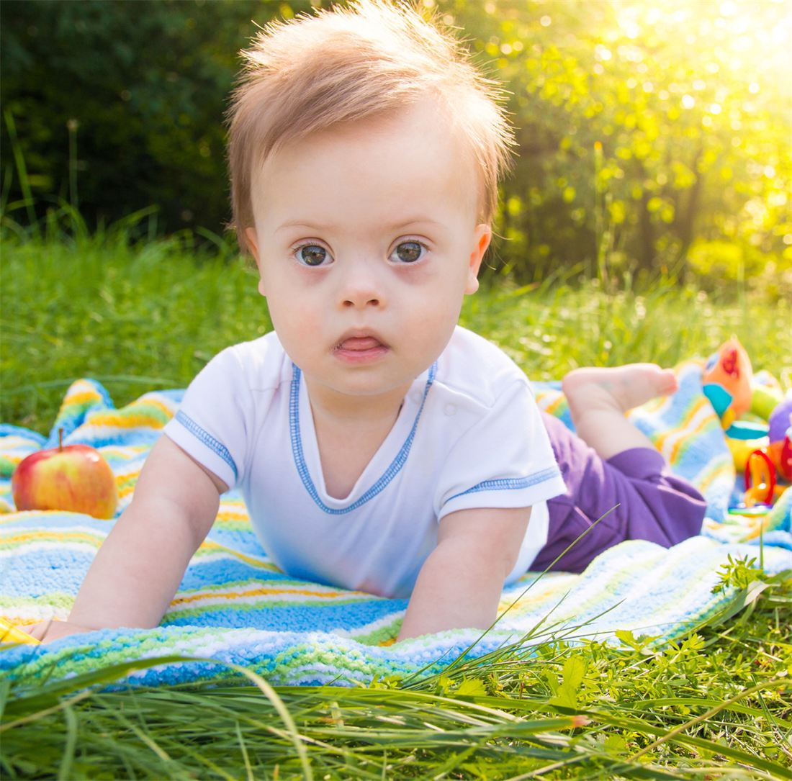
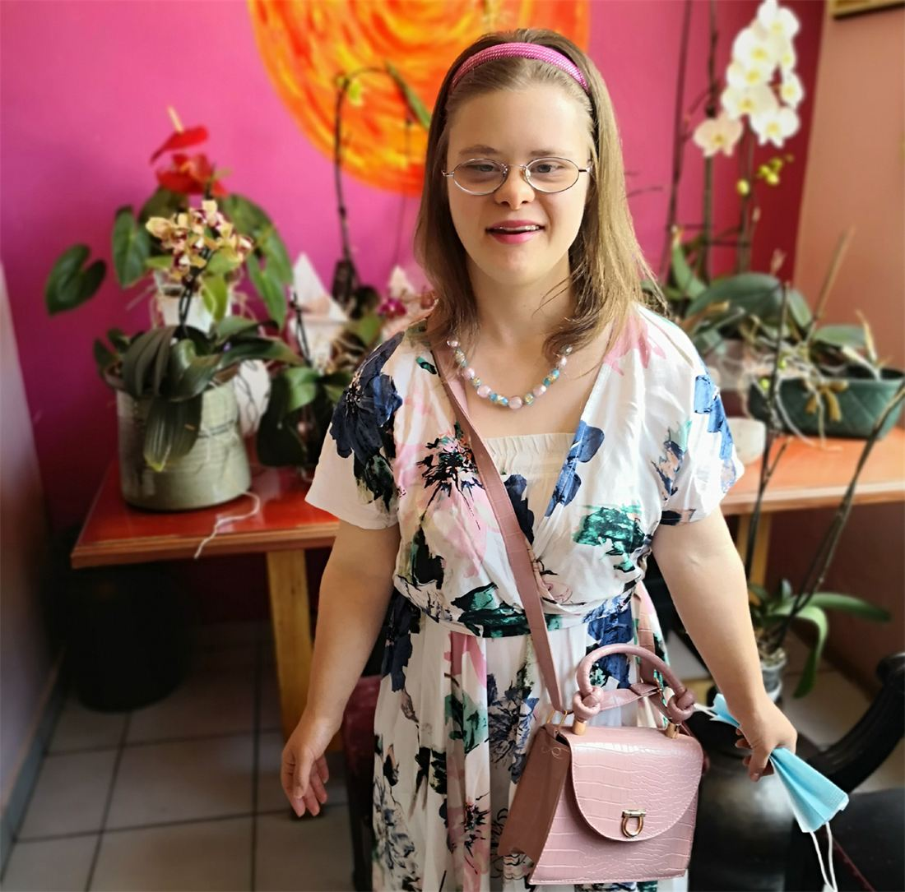
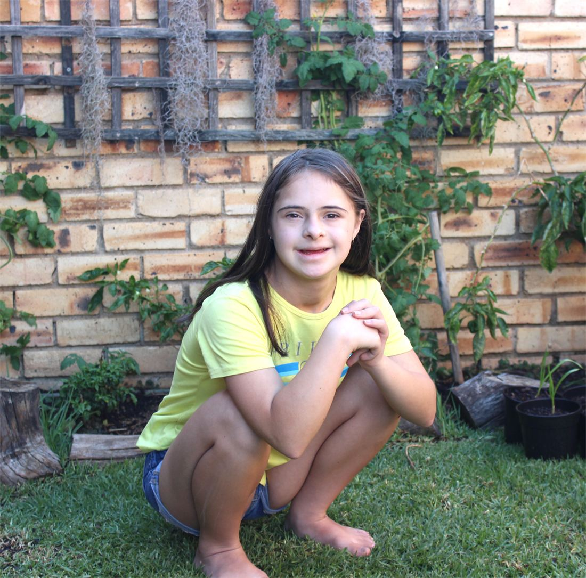

Programmes
Free support, from birth throughout adulthood.
Our programmes were developed in close co-operation with the communities they serve. They are free of charge, designed to be easy to reach, and delivered with local service providers.

Outreach support & early intervention
Children born with Down syndrome are the same as any other child, only differently-abled. Our outreach programme gives them, and the families who care for them, ongoing support from the very start.
We also help children, youth and adults who have suffered abuse or neglect to reach professional counselling and safe alternative accommodation.

Self-advocacy, life & job skills
We empower youth and adults with Down syndrome and other intellectual and physical disabilities to speak up for themselves, have their rights upheld, and be respected as individuals.
George Lesotho completed several learnerships through the programme and went on to full-time work on Eskom-based projects. He chaired the TDSAG Self-Advocacy Group and captained the Special Olympics national hockey team in Japan.

Community upliftment
Our skills training and work creation programme runs training alongside real work opportunities. Our job is to find the skills in people, not to force them into roles that don’t suit them.